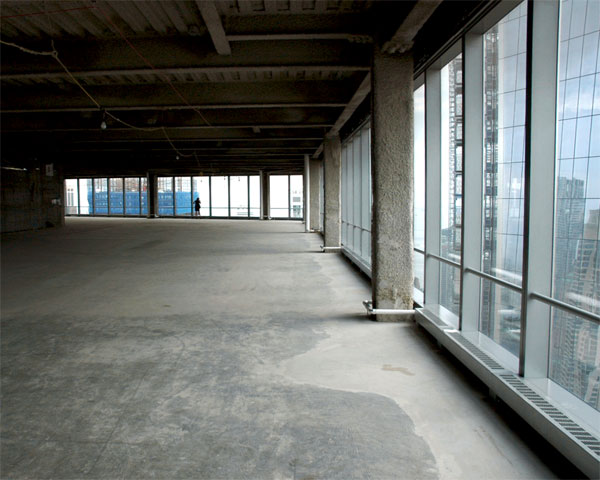
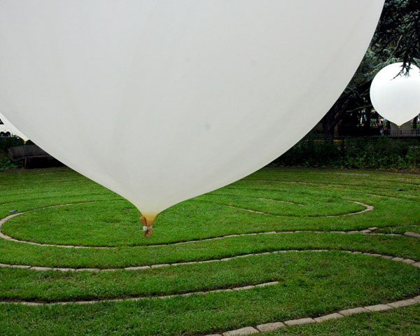
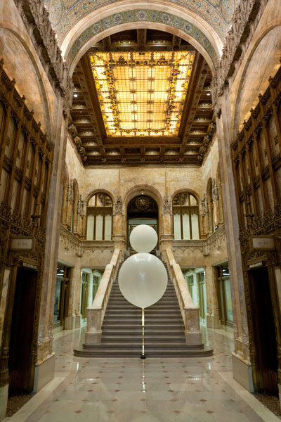
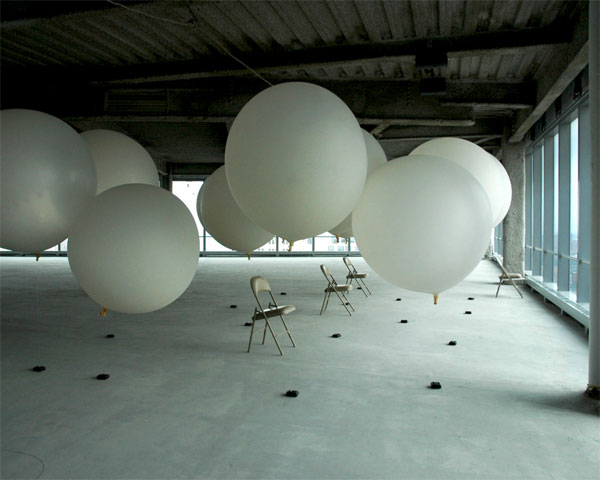

-
Stillness in a Great City
by Kaye Cain-Nielsen October 27, 2011
I’m sitting alone with my MacBook near dusk, listening to a countertenor float eerie lines on a single, high F: “my heart’s in the highlands wherever I roam…my heart’s in the highlands, my heart’s in the highlands…”. The song is on repeat, at a volume as high as I can play it off the half-broken speakers of my five-year-old machine. On September 24 I felt the same Scottish folk song, as arranged by Estonian superstar composer Arvo Pärt, envelop me as I walked into an underground ammunition storage facility. Well over a week has passed between these two moments, and this is the first time I have really been still since then.
September 22-25 marked the final weekend of the second edition of the Guggenheim Museum’s stillspotting nyc, a program of projects from its Architecture and Urban Studies program designed for spaces outside the museum. For this installation, titled/dedicated To a Great City, Pärt, the celebrated and prolific Estonian known for his minimalist, often sacred compositions, partnered with the fashionable Norwegian architectural firm Snøhetta, known most recently in New York for designing the National September 11 Memorial and Museum, to find and create a series of “still spots” in lower Manhattan. Spanning two weekends, the multisite, interactive installation invited ticket holders to experience Pärt’s music in carefully-chosen locations in Lower Manhattan and on Governors Island.
Armed with a map, an identification wristband, a friend and a rare five hours of free time, I set out to experience the Pärt/Snøhetta tribute to New York City almost exactly ten years after the attacks of 2001. I’m curious about how the collaborative process actually went down, because it felt a bit like a high-budget scavenger hunt, the most impressive part of which was access to a couple of beautiful settings otherwise forbidden to the public. Since covering the first installment of stillspotting this spring, I’d been looking forward to seeing what beauty Pärt and Snøhetta could find, or carve out in Lower Manhattan, where I happen to spend a good portion of my time. Through the language of press releases, I’d somehow come to expect an element of live music would be inserted into the curated locations. Unfortunately I was greeted instead by programmed iPod Shuffles and in some settings, speakers (fairly decent) playing recordings of Pärt’s music familiar to anyone who knew his work. I had also read that Snøhetta would “slightly alter” some spaces—with balloons?—but as far as I could tell, the giant white weather balloons I saw in each location, and possibly some mild lighting changes, were the extent of the firm’s preparations. But, hey, they got us into some cool buildings.
What was the definition of a “stillspot” for the collaborators? It’s unclear, but it probably meant a location in or near lower Manhattan that allowed for some rare space for reflection and the virtual suspension of time. According to the official literature, “Listeners become increasingly sensitized as they are drawn in and ideally are transformed to a focused and tranquil state.”
Stillspot number one was the labyrinth in Battery Park, opened by The Battery Conservancy on September 11, 2002 as a means to commemorate and meditate in a traditional Buddhist fashion. The labyrinth is open to all, but on this day a line formed outside of the entrance next to two smiling volunteers who were unwrapping iPod cords and giving estimates on the experience’s duration in time. This was the first of many lines of the day; I quickly learned that waiting, and being at peace with that, was a huge part of the experience, although perhaps unintentional. After chatting with a volunteer for several minutes about the changes on people’s faces between the time they entered and exited the labyrinth (to clarify, the “labyrinth” is a flat, circular path or maze made of grass and stone), I traded my driver’s license for an iPod shuffle set for the beginning of Arvo Pärt’s Silentium, from his 1977 composition, Tabula Rasa, and stepped off.
Looking out at the harbor through the negative space in the Korean War monument barely yards away, listening to this forty-year-old recording of music played by Keith Jarrett, Alfred Schnittke, and other classical stars of the age, all outside motion seemed to stop. I sank into the familiar soothing swells of Pärt’s piece and made my way through the slightly muddy cyclical path, leading to a huge white balloon. I noticed my feet had succumbed to an unusual calm, and I stood looking out at the water. I had removed my bifocals, but a sharp picture emerged. As the music slowed to a nearly silent stillness, each item in the landscape—the water taxi, the seagulls, the tourist child with a balloon, and some grand building across the Hudson came into focus one at a time. I tried to pull my phone out and capture the scene as I saw it, but I knew this was futile from the first fumbling reach into my purse. It was equally impossible to capture a scene of two airplanes flying up West Street, above the right angles of the financial district.
I watched two women going about their headphoned paths along the labyrinth. As the younger of the two neared the balloon that demarcated all installation stillspots, she reached out her hand to the older woman, who took it easily. Thinking they were strangers, my sentimental impulses broke loose and I felt my eyes welling up. I saw them talking familiarly later, but that moment represented something rare nonetheless.
I kept returning to my own “stillspot” within the stillspot, losing myself and forgetting (trying to forget) that I was on display to the line of other ticketholders impatient to find their peace. Once the sixteen minutes of the piece concluded, I removed the headphones, eyes slightly glazed over, and checked a map for the next stop.
Next on the suggested route (the first volunteer I met when picking up the tickets chirped, “you can go whichever way you please but the suggested route is the most efficient!”) were two locations on Governors Island. Having only been to the island once before, for the near apocalyptic vision of hundreds of hungry people stuck on the island for the comically undersupplied food cart festival last fall, I was looking forward to a more pleasant, calming visit. It took over an hour to get there. Moving my way to the ferry through Battery Park, I came across another amazing vision: a full blown pagan festival, complete with a witch lecturing on the subject of doing magic on a budget. I confess I was drawn in by the witches, and I fully include the happenstance as part of my experience with the day-long exhibition. After listening to the speech on using natural elements for Wiccan ceremonies, instead of purchasing the incense and other artifacts that represent these elements (“sometimes less is more,” the redhead imparted to her crowd of about twenty) or purchasing some handmade soaps with spells for each phase of the moon, I pushed through the votaries and the tourists, past the crowd returning to Staten Island, and headed toward the Governors Island ferry dock.
Along the way, hungry, and with ghost pangs from last year’s nourishment shortage on the island, I maneuvered away from barkers offering helicopter rides, funny hats, excursion rides and maps, and stopped at a hot dog stand. This day, defined as it was, I felt I could succumb—if just a little bit—to feeling like a tourist in my own city. After some harsh words with a vendor who could have really used some stillspotting therapy, I consumed a three dollar (three dollars!) hot dog, and waited in another line, the second of several throughout the day. After a good half hour (the first portion of which I spent in the wrong ferry line), I embarked for the two-minute ferry ride to the island. On the ferry, I tried to sit as still as possible, to absorb the surroundings: helicopters, shipping containers and their robotic giraffe lifts, tour ferries, skyline, heavy mist.
Disembarking, my friend and I walked down a path to the left, passed red brick soldier barracks, passed through a small gate and entered what was described as an underground magazine. When I had seen this term on our stillspotting map, I was confused, half expecting the offices of some radical 19th century publication. Then I was reminded that one of the English meanings the French word “magazin” has assumed is that of a safe place to store gunpowder and ammunition. I love that, and will always keep it in mind when reading or writing anything particularly fiery in a periodical. After musing on this for a moment, I was drawn further underground in by an eerie, beautiful sound. There in the dank, misshapen rooms of the magazine floated the requisite white balloon, and the resounding of a countertenor’s voice. Moving from room room to room, I let the sound emanating from corner speakers wash over and around me, my body willingly acting as a conductor and reflector of the disembodied voice in each unique chamber. Throughout my traversal of these spaces, the mournful Scottish song based on an eighteenth-century poem by Robert Burns brought me deeper into a strange, reflective bliss. There were some chairs set up in each cell, and I noticed that a long-haired girl with a book had installed herself in one of the larger storage rooms. I wondered if the security guard who stood near the white balloon all day listening to the countertenor yearn for the highlands was moved to reflection as well. It didn’t appear so.
Reluctantly exiting my newfound happy place where I was cheerily examining corner rust spots and peeling paint (I almost had to be literally dragged out by my companion, who reminded me the final ferry was departing fairly shortly), I made my way out of the magazine and back into the light. Moving up an incline and past what looked to be generals’ quarters, we found the next set of volunteers – and the next white balloon – set up at Fort Jay Overlook. Waiting in line yet again, I watched the volunteers fumble with some more iPod cords and try desperately to keep it together. Once it was my turn to experience this spot, I put on the headphones and heard the beginning strains of Mein Weg, Pärt’s more-recently-recorded mimicry of and reflection on New Yorkers’ anxiety. I paced around the edge of the small hill, looking out at the distant city in the late afternoon and, much closer, the voltage boxes that deliver power to Governors Island. I had avoided my phone for most of the day, but now I ducked behind one of the boxes and took a call about an event I was planning that night. Trying to get back into the piece, I put on the headphones, but couldn’t keep my eyes off the growing line of antsy folks awaiting their turn to hear “My Way.” Sometimes, with stillness, one must reflect on one’s own anxiety, but it isn’t easy to take—and it doesn’t feel particularly unusual, or special.
I headed off the island with droves of other people, battling the early fall gnats, standing in another huge line for the last ferry back to Manhattan. On the overcrowded upper deck, I whipped out my notebook and jotted down some reflections, although my elbow was bumped by a fellow passenger with nearly every other line. My partner looked agitated, but graciously waited until we disembarked on the Manhattan side to remind me of a fatal accident some years ago involving an overstuffed Governors Island ferry at the end of the day. With an eye on the map for the next still spot, we boarded the bus which would take us close to our next stop. After getting off we walked through perhaps the least still portion of lower Manhattan. Noisy construction projects had exposed under-the-road-surface pipes and real, centuries-old dirt, with a smell as dank as the magazine. A wave of police cars shuddered past us with their rattling sub-bass sirens. We squeezed through the narrow blue-boarded pedestrian walkways near the new Fulton Street transit center towards the historic Woolworth Building.
Though we were seated in the most grandiose of all the structures I would enter that day, the installation in the Woolworth building lobby turned out to be the greatest overall disappointment. With sore feet, I arrived in front of the famously off-limits doorway to the fabulous gothic-inspired structure that has had the same discouraging gold colored notification installed out front since September, 2001: “No tourists beyond this point.” I waited there for about fifteen minutes, and after briefly story swapping with some stillspotting volunteers I recognized from earlier in the day, I found myself totally ignoring my friend and turning to smartphone land. The hours-long dance of motion and buildup and then just waiting for stillness had proved exhausting, and I retreated into a robotic state, but once inside the lobby, my spirits lifted considerably. Despite the fact that it felt a little gimmicky to be allowed access to this building because of a vaguely-articulated Guggenheim connection, the insanely detailed, golden, stained-glass and marble confection of the early twentieth-century lobby was enough to bring on a momentary unforced stillness, at least long enough to stand and gasp. But that was about it. Our group sat on the grand marble staircase between two white balloons and listened to a prerecorded version of Arvo Pärt’s choral and orchestral composition In Principio on halfway-decent speakers. Given that the maps and brochures touted this portion of the event as “the most theatrical,” I was at least expecting to hear some live music at this junction. The copy from the furnished map reads, describing the piece, “[h]ere dramatic bass sections are relieved by a pulsating rhythm and stoic pace of the choir, representing the balancing act that is common in Lower Manhattan.” Whatever that means, I think I would have gotten a better sense of that “balancing act” had I, first, not been so exhausted and, second, heard a live choir and a live brass section, but maybe I’m being too demanding. After about fifteen minutes when the piece had finished, I got up, had a brief look at the names of the businesses listed in the building directory (mostly law offices), dutifully let my jaw drop a few more times with the wonders of the architecture, and headed out, tired and slightly underwhelmed.
For the final stage of Pärt and Snøhetta’s collaboration, we were allowed access to the 46th floor of 7 World Trade Center. I have to admit that, from the absurdly sleek lobby to the speeding elevator to the pure magic of stepping out into the scene on that high floor of the soaring tower, I was genuinely impressed – and uplifted – this time. A short piano glissando from Pärt’s Hymn to a Great City, with driving notes repeated over and over underneath, filled the inside of the half-finished, unobstructed full floor. It was nearly sunset, and the arts patrons who were there that evening variously stood, sat, or crouched, visibly in awe of the city below. The “installation” unfolded outside through enormous floor-to-ceiling windows arrayed along the edges of the concrete shelf which stretched across from the rough building core in all four directions. There were balloons.
This is what power feels like, I thought, while nervously staring down the hundreds of feet below, to the Hudson, the financial district, the bridges, and the tangle of streets, buildings and tiny people going about their early evening business. This kind of view is exhilarating, but here it also felt very thin and fragile (I have a fear of great physical heights, so perhaps my own morbid worries took over). I felt the pull of my acrophobia, but I couldn’t ignore the calming beauty of the pink and orange light swallowing the blue and grey below, accompanied by the sound of the driving, glistening piano. At the same time I couldn’t help thinking of the image that I retain most from that September ten years ago, as a thirteen-year-old kid in the Midwest. I saw, over and over on television, people who went to work every day and rode fast elevators and sat looking down on this great anthill jump—in their suits and ties—to their deaths. A screen separated me from that reality and that immense choke of dust which soon followed, but for them, their final moments included the incredible and abominable decision to leap from horror scenes inside onto the unyielding pavements they looked down upon from their mighty offices each day.
Peering almost straight down, one could see the open wounds of the Trade Center’s new reflecting pool memorials, the lighted construction machinery all around them, and in the very midst of it all, Snøhetta’s own soft, bright wedge of a museum. The building has an agenda, it “will provide each visitor with the opportunity to engage in the act of remembering and to ponder the consequences of forgetting.” This portion of the stillspotting experience, too, had a commanding intent. “Amid a blurred landscape of balloons,” the Guggenheim copy reads, “the uplifting tones from the two pianos in ‘Hymn to a Great City’ subtly urge visitors to look forward and beyond.” I read this on the map of the stillspots prior to entering the building, and had decided it was too creepy and so I resolved that I would not be so moved. But I have to admit they were right. I was subtly urged to look forward and beyond, and an excited calm came over me. What I didn’t know at the time was that, just as I was enjoying the sunset with all the calm and stillness and exhilaration I genuinely felt, some #OccupyWallStreet protesters were getting seriously beaten up by the police for an important (and overwhelmingly peaceful) demonstration going on almost directly below me. Stillness and calm are valuable antidotes for New Yorkers, and I am personally and more broadly grateful that the Guggenheim has taken on this largely therapeutic project in our maddeningly loud and excited city. Perhaps however right now is not the appropriate time to be quiet and still.